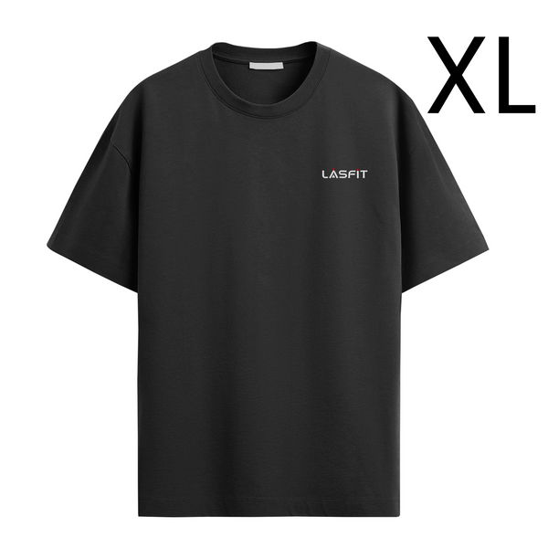
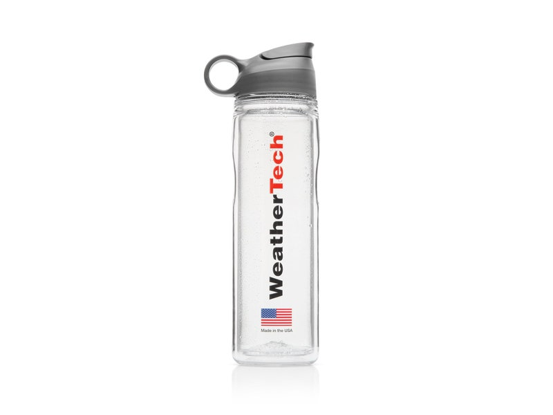
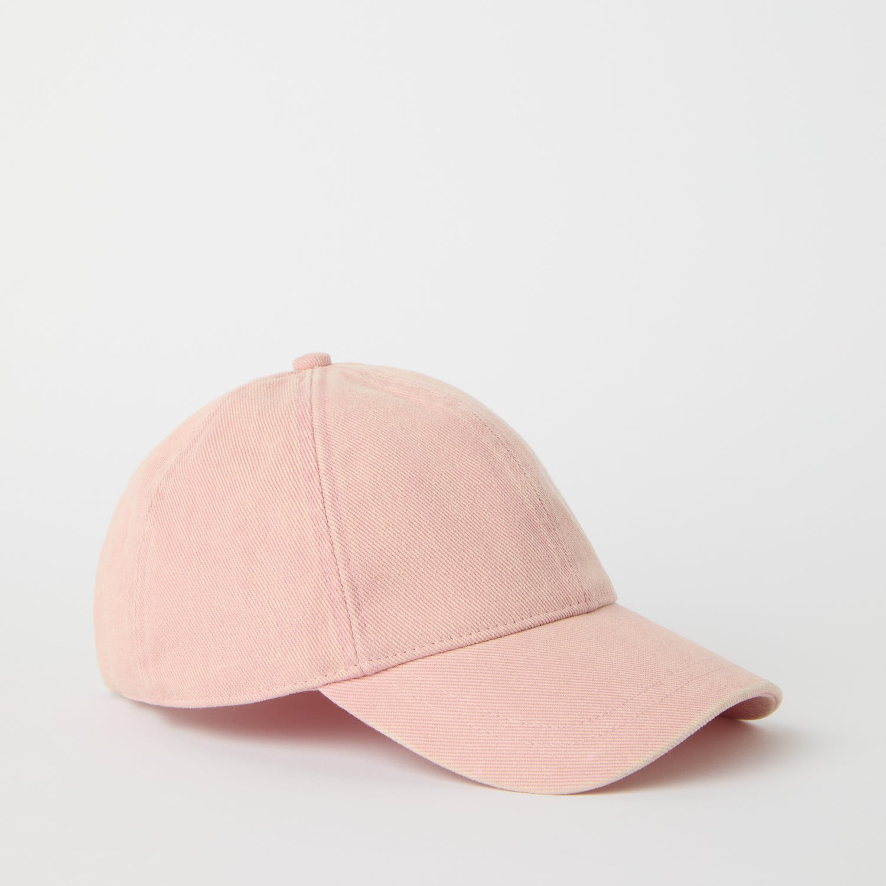
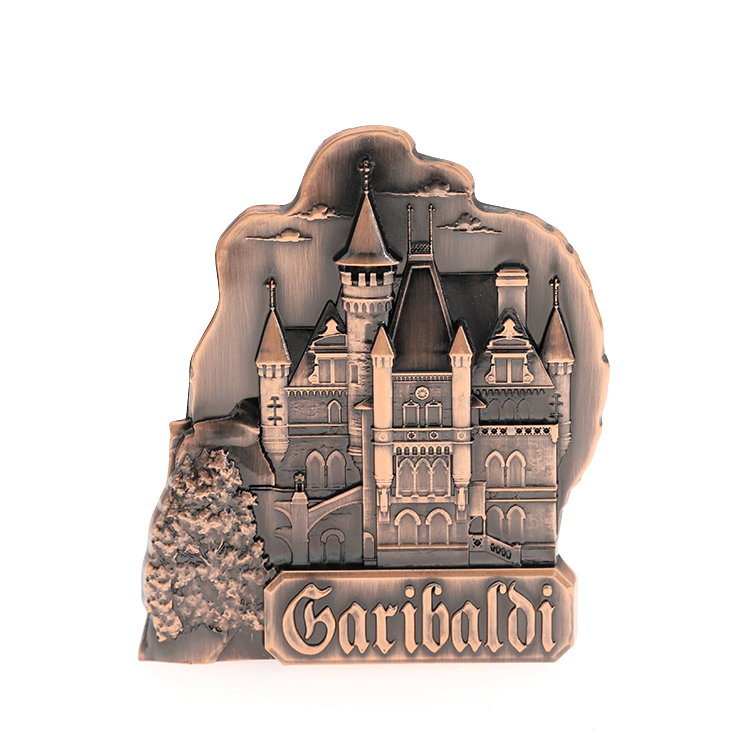
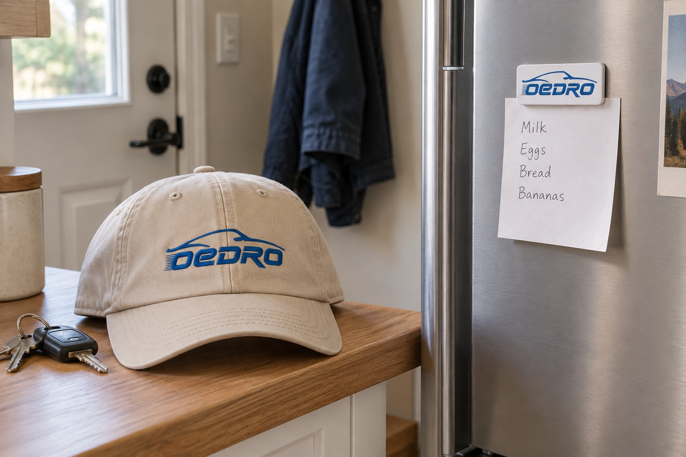

Oedro周边
让用户愿意用、经常看见，是周边企划的出发点。
帽子出门戴，冰箱贴留在家里的冰箱上夹便条，钥匙扣每天带在身上。获得方式可以是购买、赠送或参加活动，投票共创只是其中一种形式。以下为周边设计与试验建议。
方案要点
- 试验目标：验证用户是否愿意选择、使用和展示周边，销售额不是唯一早期标准。
- 首批询价：50 顶做工与佩戴感合格的帽子、100 个同款金属冰箱贴，取得报价与实物样后决定订单。
- 设计方向：工具工装、户外路线、车主幽默，分别判断场景与偏好。
- 共创承诺：高票进入打样评估，需求、预算和权益通过核对后再决定生产。
产品优先级
- 首批打样
- 冰箱贴以金属浮雕或烤漆方向为主，比较边缘、电镀与背磁牢度；帽子比较版型、佩戴感和刺绣效果。材质名称不能代替实物验收。
- 低成本备选
- 贴纸、钥匙扣与织章。若帽子的打样或小批量费用超出预算，可改为比较这些形式；尚未取得对应报价。
- 后续候选
- T 恤和保温杯：用户对尺码、面料和保温性能的要求更分散。卫衣与夹克更后，需额外核对库存压力。

三个设计方向
工具工装

把结构线、织带和压印做进设计，让周边看起来像车间里会用到的东西。重点比较材料细节与工具箱、工作服的搭配。
户外路线

用弯曲的山路做图案，适合工具箱或车窗，强调“车是去户外的工具”。图案应能在小面积上辨认。
车主幽默

围绕“总被叫去搬东西”的情境做设计，写车主一看就懂的场景。判断用户是否愿意使用这个表达，避免廉价笑话。
共创怎样走到实物
活动名建议为 Your Next OEDRO，中文可作“你的下一件 OEDRO”，用于征集和投票页面。正式使用前需查商标，当前不保证名称可用。
- 确定主题
- 可生产候选
- 展示投票
- 核需求、预算与权益
- 打样确认
- 小批量寄送
- 真实使用分享
高票代表进入打样评估，生产仍需核实需求、预算、最低起订量与设计权益，不能自动承诺。
IG 可用视觉投票，FB 和邮件可同步征集选择。X 需要独立发图加关联文字投票；匿名票无法对应具体用户，不能作为领奖名单。
下一阶段开放 DIY 投稿
投稿前写清许可、署名和奖励条款，不能默认投稿即可商用。筛稿时看原创性和可生产性，入围后公示、投票、验证成本、打样，获奖者确认授权后才生产。用户投票是选择线索，不能替代生产判断。
- 规则与投稿
- 原创和生产筛选
- 入围公示、投票
- 成本与样品验证
- 确认授权
- 生产
Threadless 官方机制可作参考：用户评分和评论供品牌最终选稿，高票不保证生产。
同行的具体周边
Rough Country 网帽
Richardson 112 黑色网帽搭配棕色品牌章，商品编号 84119。日常可戴的基础帽型配品牌章，是值得参考的组合。
官网看网帽 ↗LASFIT 十周年 T 恤

LASFIT 官网有十周年黑色圆领 T 恤商品，官方周年活动文章也记载曾用周年 T 恤作奖品，可见服饰既能作为商品售卖，也能作为活动礼物。
官网看 T 恤 ↗ 周年活动用法 ↗WeatherTech 运动水瓶

WeatherTech 官网有 Water Bottle 运动水瓶商品。可借鉴的是喝水与随身携带场景，让品牌出现在日常动作里。
官网看水瓶 ↗首批采购候选
优先询上海先进帽业（Advanced Cap）的帽子与温州嘉博（Jiabo）的金属冰箱贴；海兴与仁汇作为比样、比价的备选。首批以 50 顶同款同色帽子、100 个同款冰箱贴询价，质量由实物样决定。
帽子 · 版型、面料与小面积刺绣

询价规格：成人可调节棒球帽、同款同色 50 顶；棉斜纹或经样品确认的混纺面料，正面一处小面积平绣。让厂家写清克重、帽深、围度调节范围、汗带与后扣材料。
- 优先 · 上海先进帽业
- Advanced Cap 店铺 ↗ · 品牌方制造商披露 ↗
平台部分帽款展示 US$1.80–5.80/顶、50 顶起订，可作询价起点；定制图案、面料与国内含税价格须重报。品牌方披露支持优先看样，不保证这一批次质量。
- 备选 · 雄县海兴
- 供应商店铺 ↗
公开店铺有棒球帽与刺绣定制，但价格为面议。调研记录价 US$1.85–5.75/顶、50 顶起订，均待复核；按同一规格询价、索样比较。
金属冰箱贴 · 浮雕、表面与背磁

询价规格：同款 100 个、最长边约 60–70 毫米，锌合金浮雕或金属烤漆，背面磁片固定、边缘无毛刺、单独防刮包装。厚度、重量、磁力与表面处理须由厂家提供具体数值和样品。
- 优先 · 温州嘉博
- Jiabo 金属冰箱贴目录 ↗
调研参考 US$0.28–0.85/个、50 个起订，单价与起订量待确认。官网款式页写模具费通常 US$65–200，按图案与尺寸核价；样品 8–10 天、大货 15–17 天，另有样品 2–7 天的表述，须书面统一交期。
- 备选 · 中山仁汇
- 供应商资料 ↗
调研参考 US$0.30–0.80/个、100 个起订，模具费未知。公开资料的通用 FAQ 写通常 500 个起订，与该线索不一致；须确认是否接 100 个定制金属冰箱贴，再比较总价。
费用预留与报价口径
- 帽子 50 顶
- 按每顶人民币 25–45 元预留，货款约 1,250–2,250 元；打样、绣花制版与特殊包装另问。
- 金属冰箱贴 100 个
- 首批货款加模具费暂预留人民币 700–2,000 元；样品是否抵扣、包装与税费是否包含，需拆项确认。
- 国内送达上海
- 按实际箱数、重量与承运商报价，普通小批量快递暂按每家 30–80 元作粗估。美国运输不计入上述成本。
以上人民币金额是规划预留，美元区间是平台展示或调研记录价，都不是正式报价或已批准预算。询价单须逐项列出货款、样品、制版开模、包装、税费与国内运费；目前尚未联系或下单。
收到样品后看什么
- 帽子：上头看帽深与压额感，检查绣字是否清楚、内侧线头与后扣是否刮手；按标注方式清洗后检查变形、掉色与刺绣起皱。
- 冰箱贴：摸边缘是否割手，检查涂层、气泡与溢胶；在常用冰箱表面反复取放、夹便条，确认不会轻易滑落、掉磁或划伤表面。
- 大货一致性：留下确认样与尺寸、颜色、工艺照片，报价里约定缺陷处理方式；样品不合格则改样或换候选。
周边可以用在哪里

- 出门会戴的帽子
- 用于访谈、测试或车主分享的感谢礼，也可供社群活动选择。发放前让用户选款并确认是否愿意佩戴，礼物不以好评为条件。
- 家里留得住的冰箱贴
- 夹购物清单、路线便条或照片；适合作为订单小礼物与活动纪念。设计要在冰箱上看得清，也要能稳稳夹住纸。
- 用户愿意主动购买
- 有真实样品、尺寸与领取反馈后，可评估少量销售。卖得出去与日常愿意用，都比只统计投票更能帮助决定补货。
邮件邀请可衔接现有邮件模板。
验证与止损
有效选择、主动问购买、自愿晒实物、重复参与、实际领取，以及未来销售时的售出情况，是早期验证指标。投票热度需与后续行为一起看。
不先开几十个款式，不量产不受欢迎的款，也不把销售额当唯一早期标准。若高票没有转化为实际领取意愿、样品不合格，或送达成本超出可承受范围，就调整或停掉该款。